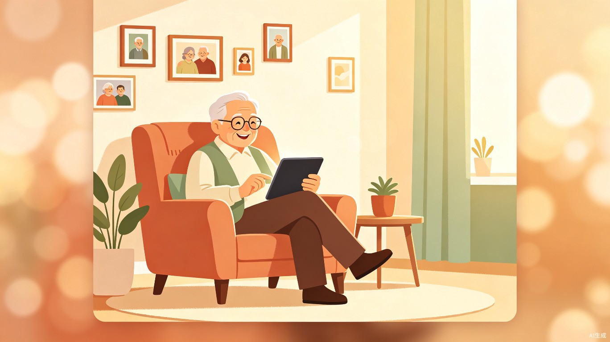

智慧助老家庭陪伴 App
独居老人不会用智能手机，吃药容易忘，联系子女不方便，日常生活中缺乏陪伴感和数字服务入口。
很多老人手里拿着智能手机，却只用来接电话。市面上的健康 App 偏医用不亲切，社交 App 风险高不适合老人。老人真正需要的不是工具箱，而是一个会说话、能提醒、能看到家人照片的陪伴型助手。
一款面向老人与子女双方的移动端 App，老人端以语音播报和大字界面为主，子女端负责远程配置和照护管理。
65 岁以上的老年人，尤其是独居或白天无人照料的银发群体。他们需要低门槛的数字陪伴服务，方便联系家人、按时服药、获得情感支持。
老人的子女或照护者，他们需要远程关注老人的日常状态，在忙碌的工作之余，用最低成本了解老人是否安全、是否按时吃药、是否感到孤独。
中国正在加速进入老龄化社会，独居老人数量逐年上升。绝大多数智慧助老产品侧重医疗监控和紧急救援，忽略了老人日常最需要的陪伴感和低门槛数字服务。
岁岁安通过"子女远程配置 + 老人极简使用"的双端设计，降低了老人使用数字服务的心理和行为门槛，让技术回归"陪伴"这个最朴素的需求。同时，通过用药提醒和状态查看功能，缓解了子女无法随时陪伴的焦虑，把家庭照护从"电话询问"升级为"日常可见"。